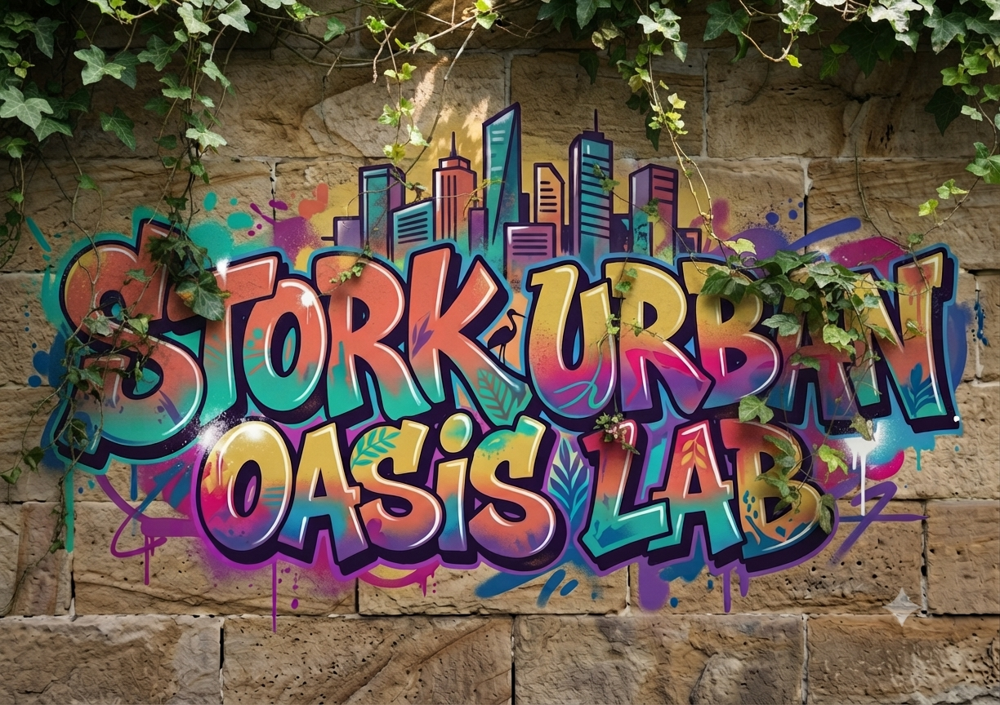

SUOL / VISUAL LAB
Ideen werden
sichtbar.
Studien, Varianten und Lebensräume. Die Hauptseite bleibt klar – hier darf die Bildwelt wachsen.
← Zurück zu S.U.O.L.
SUOL / VISUAL LAB
Studien, Varianten und Lebensräume. Die Hauptseite bleibt klar – hier darf die Bildwelt wachsen.
← Zurück zu S.U.O.L.